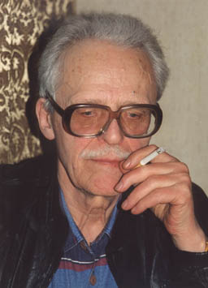

Честь имеем?

В ХХ веке русская армия сменила четыре прилагательных.
Она была царской, Красной, Советской и русской.
Основные задачи ее оставались вроде бы прежними, однако сущность
изменилась до неузнаваемости.
Армия России царской относится к армии современной, как реальный
исторический персонаж к актёрскому его воплощению.
Все теперь иначе –психологически и морально, этически и
эстетически. То есть, по всему спектру, именуемому культурой.
Для наглядности приведу несколько характерных примеров.
Во время Первой Мировой войны в юнкерские училища пришло множество
молодых людей, имевших за плечами городские училища
(образовательный ценз был снижен). Этих новых юнкеров легко
вычисляли по одной примете: они не ставили на место стул,
заканчивая обед. Количество разбросанных по столовой стульев точно
соответствовало количеству вновь поступивших молодых мещан.
Офицерам запрещалось курить на улицах. Курить можно было, либо
взяв извозчика, либо в ресторане или кафе, входивших в число тех,
которые офицерам разрешено было посещать в данном городе.
Офицер никогда не садился в общественном транспорте, каким бы
усталым он себя ни чувствовал. Для офицера это было так же
недопустимо, как спать или зевать в людном месте.
Офицер не имел права напиваться в общественных местах, завязывать
случайные знакомства. О матерщине и речи не могло быть. Он был
обязан представить Офицерскому собранию даму, на которой
намеревался жениться, свадьба могла состояться только в том
случае, если командир полка давал свое согласие.
Под русскими знаменами исстари служили люди разных
национальностей, наречий и конфессий.
Служебным зыком всегда был русский, разговорным, для офицеров,
разумеется – французский. Но не это было главным. Главным и
безусловным был абсолютный интернационализм, говоря современным
языком. Все нации – равно как и все конфессии – равно уважались.
Во второй половине девятнадцатого века решительно не воспринимался
антисемитизм. Он рассматривался – что, кстати, вполне естественно
– как привнесение обывательских настроений в офицерский корпус. А
это являлось не просто дурным тоном, но и знаком плохого
воспитания.
Если офицер нарушал эти не писаные правила поведения, его ожидал
бойкот офицерского собрания, а если не делал выводов, то и весьма
неприятный разговор с командиром.
Кроме правил поведения ,существовали и законы службы. Не Уставы, а
законы не писанные, которыми руководствовались офицеры чуть ли не
со времен Отечественной войны 1812 года.
Одним из основных законов службы являлось здоровье нижних чинов.
Если в части, которой командовал офицер, погибал солдат, офицера
ожидало разбирательство полковой или дивизионной комиссии. Её
выводы могли быть для офицера весьма плачевными: если солдат
умирал от отравления, не говоря уже о побоях, нерадивого командира
ожидал суд офицерской чести и, как правило, увольнение из
армии.
Вторым по значимости было безусловное уважение противника, кем бы
он ни был. Особенно это проявлялось во времена кавказских войн –
вспомните восхищение мужеством и благородством горцев, которым
пронизано все творчество Лермонтова, Толстого,
Бестужева-Марлинского и даже Пушкина. Шашками, которыми через
посредников награждал наиболее смелых русских офицеров Шамиль,
гордились больше орденов. Такие шашки получили, к примеру, генерал
Дмитрий Скобелев и знаменитый на весь Кавказ «Барс Львович» -
еврей из кантонистов, личной отвагой выслуживший генеральский
чин.
Уместно вспомнить, что государь Александр II лично вернул саблю
плененному Шамилю, определил ему местом жительства особняк в
Калуге, который охранялся верными мюридами Шамиля. А детей вождя
восставшего Кавказа послал учится в Академию Генерального Штаба
Русской Армии – младший сын великого повстанца стал героем
Русско-турецкой войны 1877-78гг.
Так толковало честь офицера русское офицерство. Это восприняли и
командиры Красной армии, о чем знаю не по наслышке, поскольку
детство мое прошло в военных городках. Даже водку офицеры не пили,
разве только по праздникам.
Что же с нами произошло?
Почему после Великой Отечественной Войны резко изменился
нравственный климат в нашей армии? Почему он не перешел из армии
Красной в армию Советскую, а затем и в современную?
Как случилось, что армия победителей растеряла нравственный багаж
своих предков? Ведь в старой русской армии какой-нибудь Макашов,
невежественный и хамоватый, не только не стал бы генералом, но
вообще всю свою службу проходил бы в денщиках.
Сегодня в армии беспрестанно вспоминают об офицерской чести.
Но ведь честь офицера – это отработанная система поступков, а не
разговоров. И судят о ней по поступкам, поскольку с мундиром честь
не выдается.Честь надо заслужить – иного просто не дано…
Еще существовала честь мундира. Это выражение всегда означало
честь полка: оно родилось, когда каждый род войск имел свою форму,
свой мундир, честь которого обязан был защищать. Этим и
объясняется заметное число дуэлей в Русской армии прошлого
века.
Современным офицерам куда труднее служить, нежели столетие назад.
Нет защиты социальной кольчуги, потому что они – не дворяне. Нет
льгот, которые имелись в те времена (офицеримел право испросить
годичный отпуск для устройства семейных дел). Нет возможности
покинуть армию, когда заблагорассудится, потому что нет ни личных
имений, ни богатых родственников. А задача прежняя: выковать из
солдат броню для защиты отечества.
Сто лет назад русским офицерам было существенно легче.
Россия призывала солдат под свои знамена, когда новобранцам
исполнялся 21 год. То есть, армия получала взрослого мужчину, не
только физически развитого и уже закаленного нелегким крестьянским
трудом, но и ощутившего себя мужчиной. Рекрут к приходу в армию
обладал мужским характером, мужской волей и мужским упорством.
Так же поступали и в СССР после окончания гражданской войны,
исходя не столько из традиций, сколько из целесообразности.
Взрослый мужчина легче воспринимает обязательную солдатскую
подготовку. Он уже многое умеет, многое понимает, а потому и
быстрее проходит тяжелую для юноши адаптацию в армии.
Срок призыва на воинскую службу был сокращен до 19 лет только во
время ВОВ (деревенскую молодежь призывали с 18). И это легко
объяснимо нашими огромными людскими потерями в первые месяцы
тяжелейших боев. Однако закон о чрезвычайном для русских традиций
призывном возрасте не был отменен после войны, действует и по сей
день, и я искренне не понимаю, почему это происходит. Ведь
современная армия оснащена современной техникой, современным
оружием, современными средствами связи, что предполагает вполне
серьезное, «взрослое» отношение к ним. В какой мере вчерашние
школьники, не обладая никаким жизненным опытом, соответствуют
этому современному оснащению? Не в этом ли причина многочисленных
несчастных случаев в нашей армии? Особенно, если учесть, что в
армию, как правило, больше всего привлекаются юноши из
неблагополучных семей, лишенных мужского воспитания с детства.
Наверняка этот закон о призыве породил чудовищную форму армейского
унижения личности: пресловутую «дедовщину». Ее не существовало ни
в царской армии, ни в Красной: попробуйте заставить парня,
которому 21 год, вычистить пол в казарме с помощью зубной щетки.
Он без колебаний предпочтет гауптвахту, потому что побоев любого
«деда» не боится – он будет драться за свое достоинство, в отличие
он юнца-безотцовщины, который еще не успел стать мужчиной. И его
тут же поддержат одногодки. Именно по этой причине никакой
«дедовщины» не было в Красной армии. Но стоило снизить возрастной
ценз призывников, как она появилась.
Многие генералы винят журналистов, что критические замечания в
адрес армии разрушают всенародную
любовь к ней. Но любовью
заведуют отнюдь не средства массовой информации, а – девушки. Увы,
девичьи глазки отвернулись от господ офицеров, предпочитая, что,
кстати, вполне естественно, нормальную жизнь вечному армейскому
кочевью. А силой любить не заставишь, и с этим ничего поделать
нельзя, потому что за пределами кольцевых дорог начинается русская
провинция, быт который по-прежнему далек от Москвы,
Санкт-Петербурга и Нижнего. Это у американцев, французов и разных
прочих шведов нет таких проблем, потому что их провинция мало чем
отличается от столиц. А у нас… Так что заклинания типа «любите
офицеров, они – хорошие», увы, просто сотрясение воздухов.
Все эти проблемы мешают нашему офицеру с полной отдачей и
внутренним спокойствием заниматься своим служебным делом. И прямой
долггосударства, не раздувая безмерно армию, всерьезозаботиться
сносным существованием ее капитанов иполковников. А вот создать
моральный кодекс, именуемый офицерской честью, не способен никто,
кроме самих российских офицеров. Это – их задача, и они должны ее
решить.
Васильев Борис Львович
08.12.2000
|